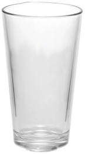

Durham's Twistiest Brews
6505 Deerview Trl | Durham NC 27712
tel 919.699.2669 | drunk@upsidedownbrew.com
What's on tap?
- 
Brettanomyces IPAAt 8.5% ABV, this double IPA is hopped with Columbus, Summit, and Nugget and fermented 100% with Brettanomyces bruxellensis to achieve a dry finish.
-
Baltic PorterThis 10% beer is wood aged with a vanilla and coffee aroma, lagered for an extra smooth roasted flavor meant for a Czar.
-
Blonde Sour AleThis 6.9% ABV lactobacillus kettle sour is fermented with100% Brettanomyces lambicus, then conditioned in an oak foeder. The beer possesses a bright crisp sourness with a fruity funkiness and hints of vanilla and oak.
-
LagerModerate hop bitterness balanced by the medium malt body from the addition of Munich and Vienna malts. At 5.6% ABV, it's the perfect refreshment on a hot summer day.
-
Rhubarb BerlinerMildly sour and fruity aroma with a clean lactic tartness from both the kettle souring and addition of rhubarb. Very light body with a refreshing sour tartness with a subtle wheat malt finish.
-
Imperial Rice IPAThis hugely aromatic IPA was brewed using 300 pounds of rice in the mash and was dry-hopped at 2 pounds per barrel with Nugget, Summit, Columbus and Polaris hops. It clocks in at 8.2% with a super dry finish from the addition of the rice which really allows the hops to shine!
Upcoming Event
Leave us a comment